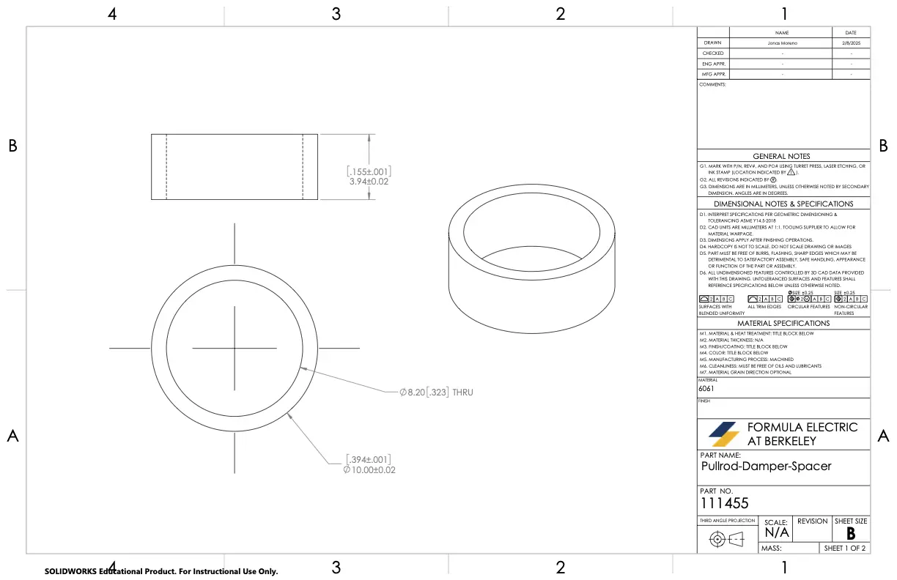
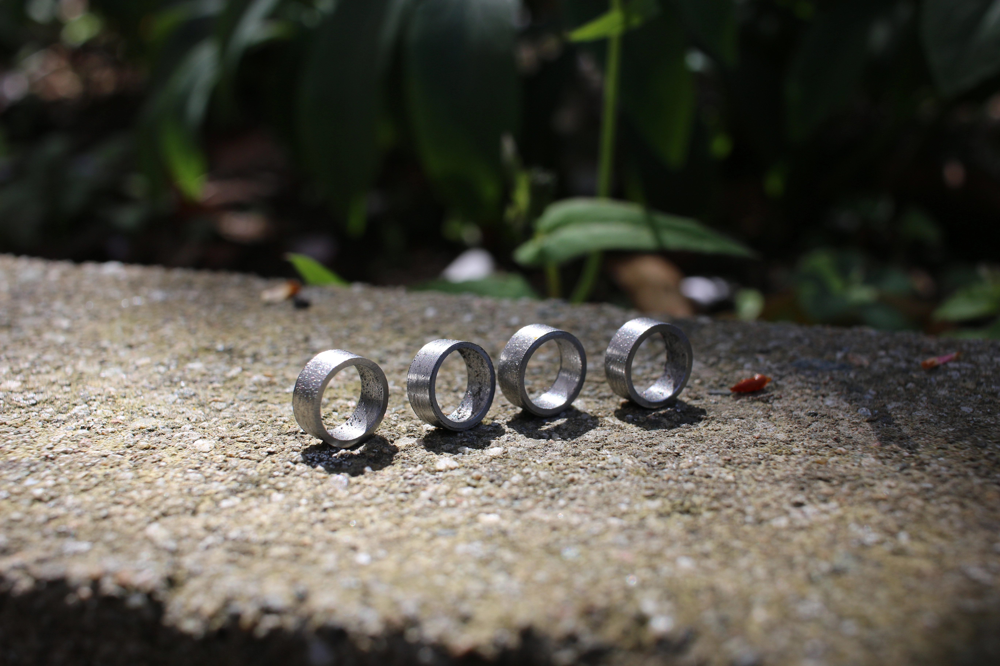
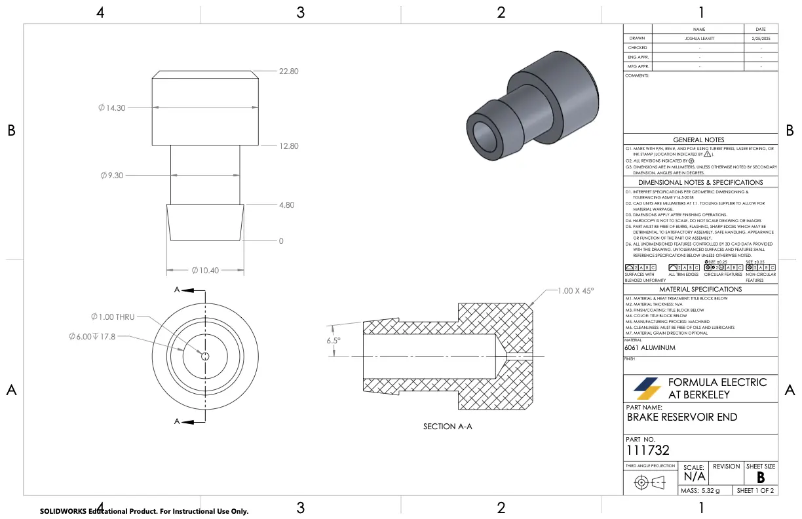
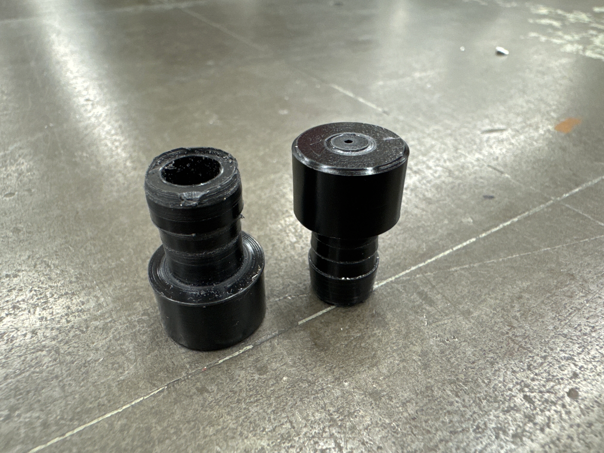
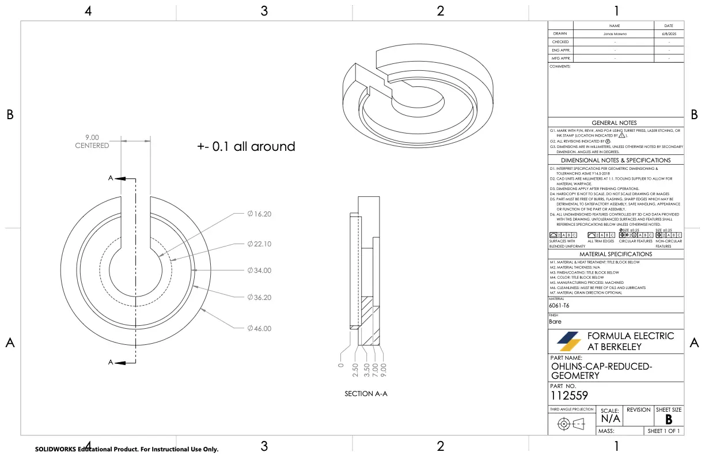
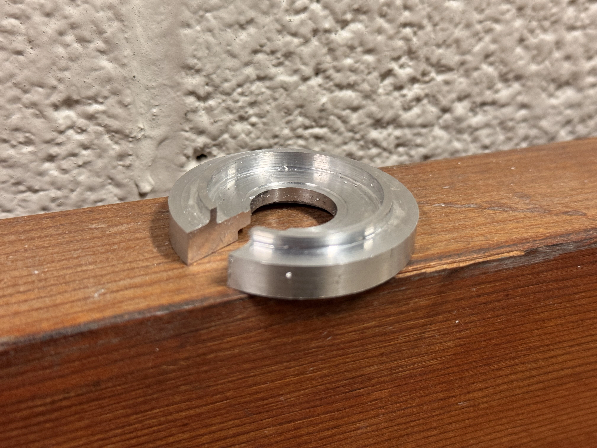
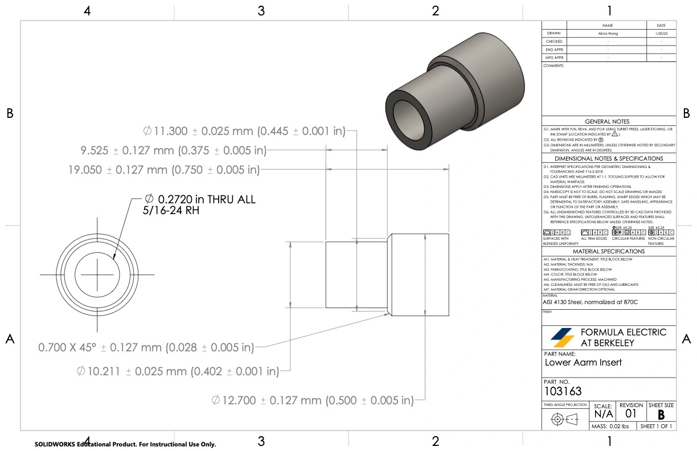
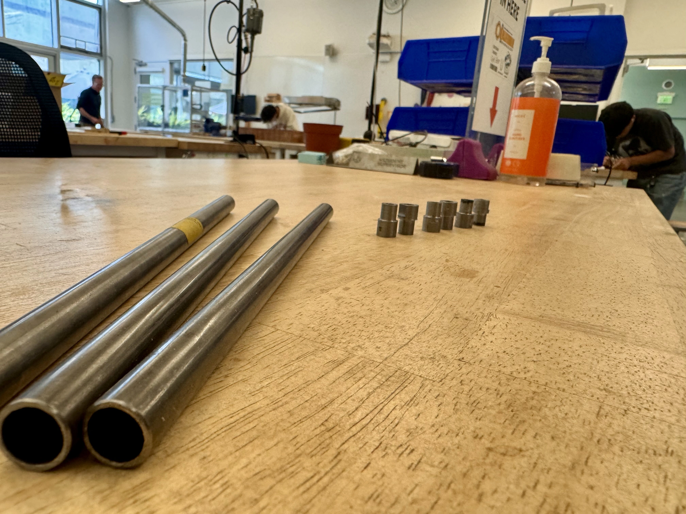

Damper Spacers
Machined to 0.001" tolerance. Used in damper stackup for suspension.
I used ANSYS simulation tools to optimize spaceframe strength and weight through structural analysis and impact testing using ANSYS Workbench, Spaceclaim, and Mechanical. This data helps to inform rule compliance and assessed the Factor of Safety under crash, cornering, and braking scenarios.
To validate these results, I designed, manufactured, and carried out physical testing with a custom jig, achieving 15% percent error from simulation results.
ROLE
Mechanical Engineer
TOOLS


This was the first time in our team's history conducting a complete FEA simulation on the chassis. I was responsible for simulations covering the torsional stiffness, cornering, braking, and crashes to ensure sufficient FOS. This data is used to inform vehicle dynamics and handling performance.
The objective was to validate simulated torsional stiffness through real-world testing, ensuring results could be replicated across future spaceframes for consistent long-term comparison, all while keeping cost and manufacturability reasonable.
Two testing methods were considered: using front jacks with fixed rear supports to directly measure twist, and a more complex setup involving a scissors jack with load cell scales to simulate realistic weight transfer.
Machined to 0.001" tolerance. Used in damper stackup for suspension.




Seals and guides rear brake tubing inside the chassis tunnel.
Precision cap fits the Ohlins TTX damper. Threads and grooves were carefully machined to match damper specs.




Transmits suspension force through the rocker arms to the chassis. Manufactured to ensure proper toe and camber alignment under load.